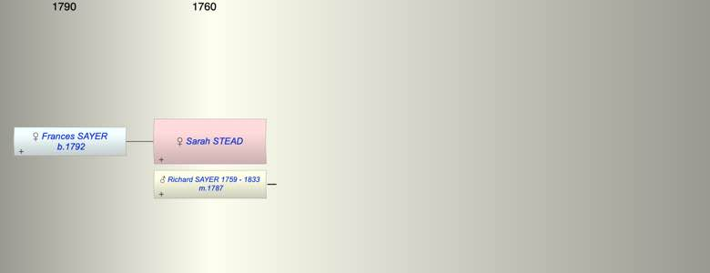

| [Index] |
| Sarah STEAD |
|  |
| m. 16 May 1787 Richard SAYER (1759 - 1833) at St Laurence |
| Children (1): |
| Frances Mary SAYER (1792 - ) |
| Events in Sarah STEAD's life | |||||
| Date | Age | Event | Place | Notes | Src |
| 16 May 1787 | Married Richard SAYER (aged 28) | St Laurence | Note 1 | ||
| 23 Nov 1792 | Birth of daughter Frances Mary SAYER | St Laurence | Note 2 | ||
| 1833 | Death of husband Richard SAYER (aged 74) | St Laurence | Note 3 | ||
| Note 1: both single and of St Laurence, by licence ex FMP PR. Witnesses Joseph and Joseph Stead |
| Note 2: bap St Laurence 25 Dec 1792 ex FMP PR |
| Note 3: buried St Laurence 26 Jun 1833, aged 73 ex FMP PR |
| Created on a Mac™ using iFamily for Mac™ on 8 Oct 2023 |